<div class="initial-content">
  <div id="main" role="main">

  <article class="page has-sidebar" itemscope itemtype="https://schema.org/CreativeWork">
    <meta itemprop="headline" content="How to import data from Microsoft SQL Server to MySQL Database Service">
    
    <meta itemprop="datePublished" content="2021-11-18T12:11:00+00:00">
    


    <header>
      <h1 id="page-title" class="page__title" itemprop="headline">How to import data from Microsoft SQL Server to MySQL Database Service
</h1>
      


    </header>

    <section class="page__content" itemprop="text">
      

        <p>After checking out how we can import data from <a href="https://blogs.oracle.com/mysql/post/how-to-import-data-from-postgresql-to-mysql-database-service">PostgreSQL</a> and <a href="https://blogs.oracle.com/mysql/how-to-import-data-from-amazon-redshift-to-mysql-database-service">Amazon Redshift</a>, let’s see how we can export data from Microsoft SQL Server and import it into MySQL Database Service (MDS) in Oracle Cloud Infrastructure (OCI).</p>

<p>This time we will use something extra (sure, for fun, but also because it’s practical): OCI Object Storage!</p>

<p>The process will be to export the data directly to OCI Object Storage from the MS SQL Server. Afterwards, we’ll import it to MySQL Database Service using the MySQL Shell <code class="language-plaintext highlighter-rouge">importTable()</code> utility, reading directly from the Object Storage Bucket.</p>

<figure class="">
              <picture>
                  <source srcset="assets/microsoft-sql-diagram.webp 1x" />
                  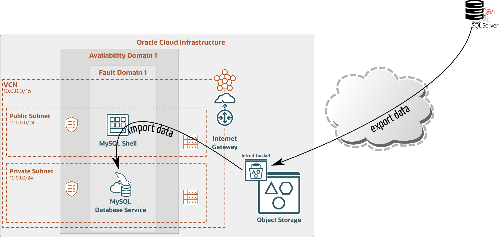
              </picture>
              <figcaption>MySQL Database Service using MySQL Shell importTable</figcaption>
            </figure>

<p>For this exercise, we will use the BikeStores sample database.</p>

<h2 id="tables-definition">Tables Definition</h2>

<p>Our first task is to get the table definitions of what we want to export to MDS:</p>

<div class="language-sql highlighter-rouge"><div class="highlight"><pre class="highlight"><code><span class="mi">1</span><span class="o">&gt;</span> <span class="p">:</span><span class="n">setvar</span> <span class="n">SQLCMDMAXVARTYPEWIDTH</span> <span class="mi">30</span>
<span class="mi">2</span><span class="o">&gt;</span> <span class="p">:</span><span class="n">setvar</span> <span class="n">SQLCMDMAXFIXEDTYPEWIDTH</span> <span class="mi">30</span>
<span class="mi">3</span><span class="o">&gt;</span> <span class="k">go</span>
<span class="mi">1</span><span class="o">&gt;</span> <span class="k">select</span> <span class="n">TABLE_SCHEMA</span><span class="p">,</span> <span class="k">table_name</span> <span class="k">from</span> <span class="n">information_schema</span><span class="p">.</span><span class="n">tables</span>
<span class="mi">2</span><span class="o">&gt;</span> <span class="k">go</span>
<span class="n">TABLE_SCHEMA</span>                   <span class="k">table_name</span>                    
<span class="c1">------------------------------ ------------------------------</span>
<span class="n">production</span>                     <span class="n">categories</span>                    
<span class="n">production</span>                     <span class="n">brands</span>                        
<span class="n">production</span>                     <span class="n">products</span>                      
<span class="n">sales</span>                          <span class="n">customers</span>                     
<span class="n">sales</span>                          <span class="n">stores</span>                        
<span class="n">sales</span>                          <span class="n">staffs</span>                        
<span class="n">sales</span>                          <span class="n">orders</span>                        
<span class="n">sales</span>                          <span class="n">order_items</span>                   
<span class="n">production</span>                     <span class="n">stocks</span>                        

<span class="p">(</span><span class="mi">9</span> <span class="k">rows</span> <span class="n">affected</span><span class="p">)</span>
</code></pre></div></div>

<p>One big difference between SQL Server and MySQL is that in SQL Server there is a notion of database and table_schemas. In MySQL, “databases” and “table_schemas” are synonymous.</p>

<p>As all table names are unique, we will just ignore the table_schema names in MySQL and only use the database’s name: <strong>BikeStores</strong>.</p>

<p>It’s easy to get the table definition using SSMS (SQL Server Management Studio), but it’s only available on Windows.</p>

<p>We have then two remaining options for Linux users like me:</p>

<ul>
  <li>use Azure Data Studio</li>
  <li>use the <code class="language-plaintext highlighter-rouge">sqlcmd</code> command</li>
</ul>

<h3 id="azure-data-studio">Azure Data Studio</h3>

<p>From Azure Data Studio, you can get the table definition using <strong>Script as Create</strong>:</p>

<figure class="">
              <picture>
                  <source srcset="assets/microsoft-azure-script-create.webp 1x" />
                  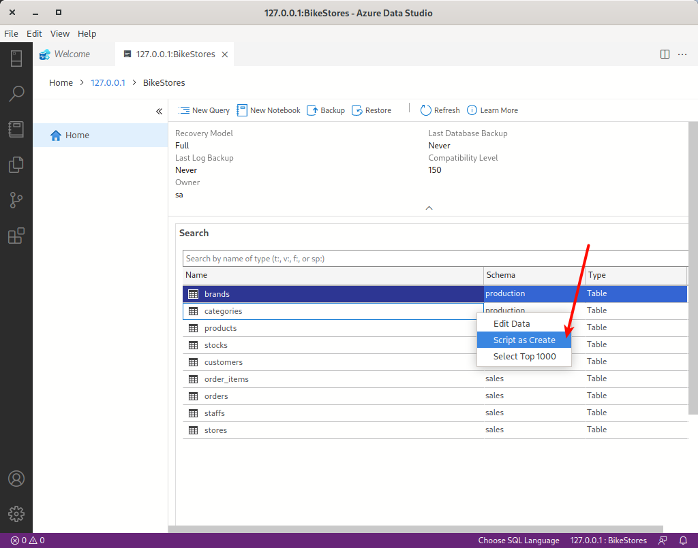
              </picture>
              <figcaption>Azure Data Studio screenshot with dropdown including the script as create option</figcaption>
            </figure>

<p>And then we get the selected table’s creation statement:</p>

<figure class="">
              <picture>
                  <source srcset="assets/microsoft-sql-statement.webp 1x" />
                  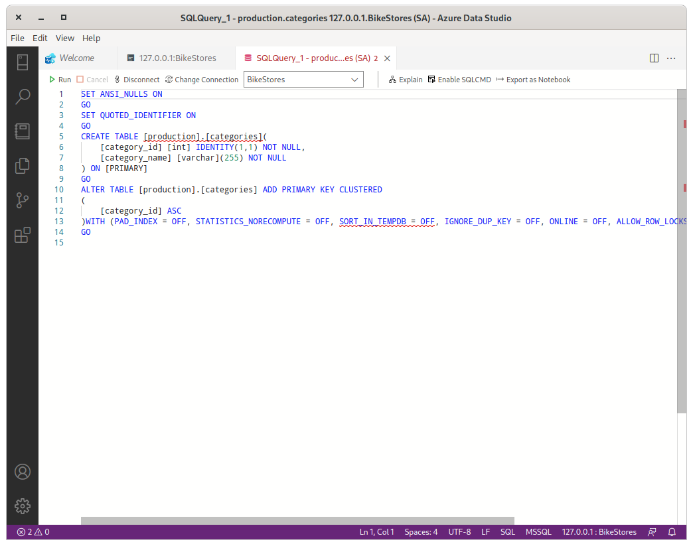
              </picture>
              <figcaption>VS Code open with a SQL file containing the table creation statement</figcaption>
            </figure>

<p>As in the previous post (mentioned at the beginning of this article), some minor changes will be required for MySQL.</p>

<h3 id="using-sqlcmd">Using <code class="language-plaintext highlighter-rouge">sqlcmd</code></h3>

<p>For those not willing to use a GUI, it’s also possible to get the table’s definition using the command line.</p>

<p>Unfortunately, in SQL Server, <code class="language-plaintext highlighter-rouge">SHOW CREATE TABLE</code> does not exist. We will use a store procedure to get the info we are looking for: <code class="language-plaintext highlighter-rouge">sp_GetDDL</code>.</p>

<p>So let’s download it:</p>

<div class="language-console highlighter-rouge"><div class="highlight"><pre class="highlight"><code><span class="gp">$</span><span class="w"> </span>wget https://www.stormrage.com/SQLStuff/sp_GetDDL_Latest.txt
</code></pre></div></div>

<p>I added the following two lines at the top of the downloaded file before loading it to SQL Server:</p>

<div class="language-sql highlighter-rouge"><div class="highlight"><pre class="highlight"><code><span class="k">SET</span> <span class="n">QUOTED_IDENTIFIER</span> <span class="k">ON</span>
<span class="k">GO</span>
</code></pre></div></div>

<p>To load it, this is the command:</p>

<div class="language-console highlighter-rouge"><div class="highlight"><pre class="highlight"><code><span class="gp">$</span><span class="w"> </span>sqlcmd <span class="nt">-S</span> localhost <span class="nt">-U</span> SA <span class="nt">-P</span> <span class="s1">'Passw0rd!'</span> <span class="nt">-i</span> sp_GetDDL_Latest.txt
</code></pre></div></div>

<p>We can now connect interactively to SQL Server like this:</p>

<div class="language-console highlighter-rouge"><div class="highlight"><pre class="highlight"><code><span class="gp">$</span><span class="w"> </span>sqlcmd <span class="nt">-S</span> localhost <span class="nt">-U</span> SA <span class="nt">-P</span> <span class="s1">'Passw0rd!'</span> <span class="nt">-d</span> BikeStores
</code></pre></div></div>

<p>We call the new procedure using the <code class="language-plaintext highlighter-rouge">schema_name</code> and <code class="language-plaintext highlighter-rouge">table_name</code> of the tables we want to have in MySQL Database Service:</p>

<div class="language-sql highlighter-rouge"><div class="highlight"><pre class="highlight"><code><span class="mi">1</span><span class="o">&gt;</span> <span class="p">:</span><span class="n">setvar</span> <span class="n">SQLCMDMAXVARTYPEWIDTH</span> <span class="mi">1024</span>
<span class="mi">2</span><span class="o">&gt;</span> <span class="k">exec</span> <span class="n">sp_GetDDL</span> <span class="s1">'production.categories'</span>
<span class="mi">3</span><span class="o">&gt;</span> <span class="k">go</span>
</code></pre></div></div>

<p>The command will return something similar to this:</p>

<div class="language-sql highlighter-rouge"><div class="highlight"><pre class="highlight"><code><span class="n">IF</span> <span class="n">OBJECT_ID</span><span class="p">(</span><span class="s1">'[production].[categories]'</span><span class="p">)</span> <span class="k">IS</span> <span class="k">NOT</span> <span class="k">NULL</span> 
 <span class="k">DROP</span> <span class="k">TABLE</span> <span class="p">[</span><span class="n">production</span><span class="p">].[</span><span class="n">categories</span><span class="p">]</span> 
 <span class="k">GO</span>
 <span class="k">CREATE</span> <span class="k">TABLE</span> <span class="p">[</span><span class="n">production</span><span class="p">].[</span><span class="n">categories</span><span class="p">]</span> <span class="p">(</span> 
 <span class="p">[</span><span class="n">category_id</span><span class="p">]</span>    <span class="nb">INT</span>              <span class="k">IDENTITY</span><span class="p">(</span><span class="mi">1</span><span class="p">,</span><span class="mi">1</span><span class="p">)</span>          <span class="k">NOT</span> <span class="k">NULL</span><span class="p">,</span>
 <span class="p">[</span><span class="n">category_name</span><span class="p">]</span>  <span class="nb">VARCHAR</span><span class="p">(</span><span class="mi">255</span><span class="p">)</span>                            <span class="k">NOT</span> <span class="k">NULL</span><span class="p">,</span>
 <span class="k">CONSTRAINT</span>   <span class="p">[</span><span class="n">PK__categori__D54EE9B454313162</span><span class="p">]</span>  <span class="k">PRIMARY</span> <span class="k">KEY</span> <span class="n">CLUSTERED</span>    <span class="p">([</span><span class="n">category_id</span><span class="p">]</span> <span class="k">asc</span><span class="p">)</span> <span class="p">)</span>
</code></pre></div></div>

<p>For MySQL, we rewrite the <code class="language-plaintext highlighter-rouge">CREATE</code> statement like this:</p>

<div class="language-sql highlighter-rouge"><div class="highlight"><pre class="highlight"><code><span class="k">CREATE</span> <span class="k">TABLE</span> <span class="n">categories</span> <span class="p">(</span>
  <span class="n">category_id</span> <span class="nb">INT</span> <span class="nb">UNSIGNED</span> <span class="n">AUTO_INCREMENT</span> <span class="k">NOT</span> <span class="k">NULL</span> <span class="k">PRIMARY</span> <span class="k">KEY</span><span class="p">,</span>
  <span class="n">category_name</span> <span class="nb">VARCHAR</span><span class="p">(</span><span class="mi">255</span><span class="p">)</span> <span class="k">NOT</span> <span class="k">NULL</span> <span class="p">)</span>
</code></pre></div></div>

<p>And we do the same for all tables we want to import to MDS. You can use the Microsoft SQL Server Type Mapping to find the more suitable MySQL data type.</p>

<h2 id="mounting-object-storage">Mounting Object Storage</h2>

<p>We will use <a href="https://github.com/s3fs-fuse/s3fs-fuse">s3fs-fuse</a> to mount OCI Object Storage Bucket on our SQL Server — as explained in <a href="https://blogs.oracle.com/cloud-infrastructure/post/mounting-an-object-storage-bucket-as-file-system-on-oracle-linux">this article</a> — and dump the tables in it.</p>

<p>We use <a href="https://docs.fedoraproject.org/en-US/epel/">EPEL</a> to install the required package:</p>

<div class="language-console highlighter-rouge"><div class="highlight"><pre class="highlight"><code><span class="gp">$</span><span class="w"> </span><span class="nb">sudo </span>yum <span class="nb">install</span> <span class="nt">-y</span> s3fs-fuse
</code></pre></div></div>

<p>We create a bucket on OCI’s Dashboard:</p>

<figure class="">
              <picture>
                  <source srcset="assets/microsoft-create-bucket-modal.webp 1x" />
                  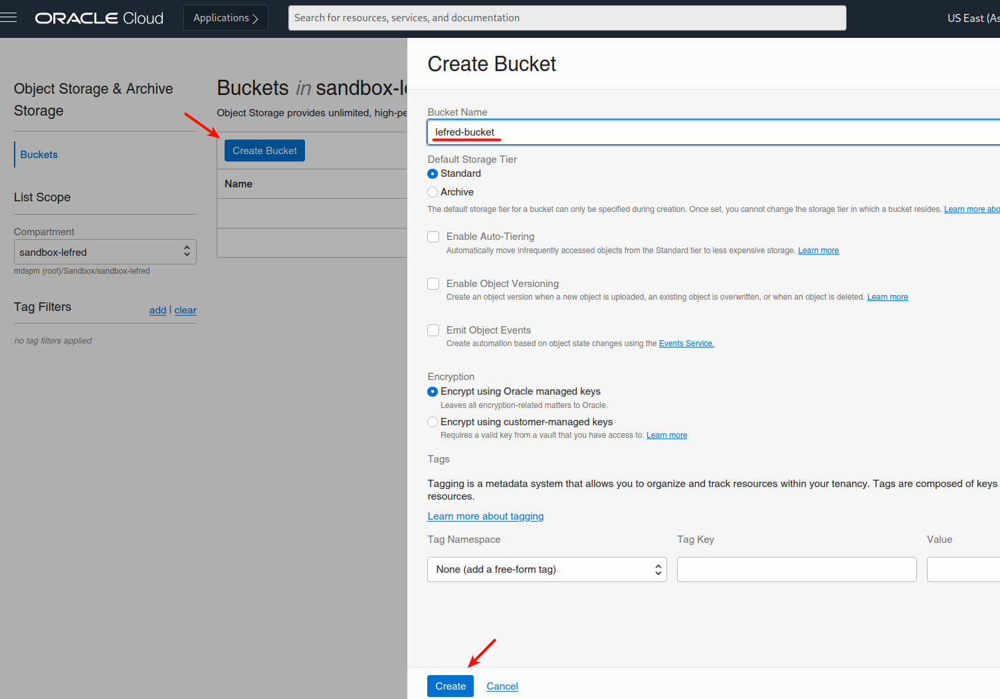
              </picture>
              <figcaption>OCI Create Bucket panel with a field for the bucket name and tag information</figcaption>
            </figure>

<p>We need to create an <code class="language-plaintext highlighter-rouge">ACCESS_KEY_ID</code> and a <code class="language-plaintext highlighter-rouge">SECRET_ACCESS_KEY</code>:</p>

<figure class="">
              <picture>
                  <source srcset="assets/microsoft-settings-keys.png 1x" />
                  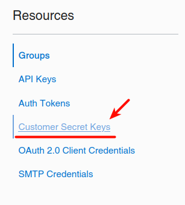
              </picture>
              <figcaption>Find the Secret Keys menu in OCI's User Settings</figcaption>
            </figure>

<figure class="">
              <picture>
                  <source srcset="assets/microsoft-secret-keys.webp 1x" />
                  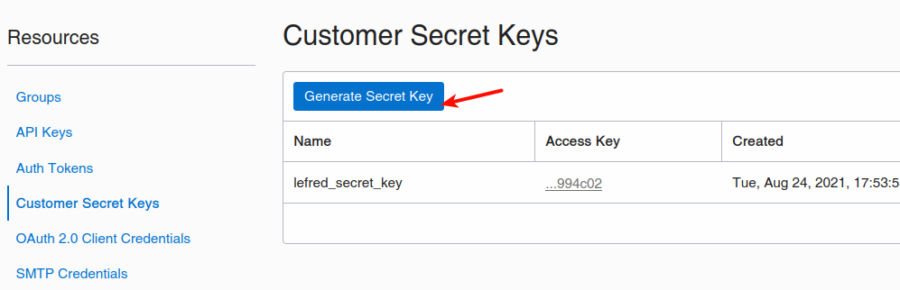
              </picture>
              <figcaption>The Generate Customer Keys button displayed with OCI's Resources panel displayed</figcaption>
            </figure>

<p>We copy these keys on one single line separated with a colon in a file, for example ~/.passwd-ocifs.</p>

<p>And we mount it like this:</p>

<div class="language-console highlighter-rouge"><div class="highlight"><pre class="highlight"><code><span class="gp">$</span><span class="w"> </span><span class="nb">chmod </span>600 ~/.passwd-ocifs
<span class="gp">$</span><span class="w"> </span><span class="nb">mkdir</span> /mnt/ocifs
<span class="gp">$</span><span class="w"> </span>s3fs lefred-bucket /mnt/ocifs <span class="nt">-o</span> <span class="nv">endpoint</span><span class="o">=</span>us-ashburn-1 <span class="se">\</span>
<span class="gp">&gt;</span><span class="w"> </span><span class="nt">-o</span> <span class="nv">passwd_file</span><span class="o">=</span>~/.passwd-ocifs <span class="se">\</span>
<span class="gp">&gt;</span><span class="w"> </span><span class="nt">-o</span> <span class="nv">url</span><span class="o">=</span>https://ixxxxxxxxxx.compat.objectstorage.us-ashburn-1.oraclecloud.com/ <span class="se">\</span>
<span class="gp">&gt;</span><span class="w"> </span><span class="nt">-onomultipart</span> <span class="nt">-o</span> use_path_request_style
</code></pre></div></div>

<p>Now we can write data directly to our Object Storage Bucket using <code class="language-plaintext highlighter-rouge">/mnt/ocifs</code>.</p>

<h2 id="exporting-data">Exporting Data</h2>

<p>Everything is ready to export the content of the tables into CSV files:</p>

<div class="language-console highlighter-rouge"><div class="highlight"><pre class="highlight"><code><span class="gp">$</span><span class="w"> </span>sqlcmd <span class="nt">-S</span> localhost <span class="nt">-U</span> SA <span class="nt">-P</span> <span class="s1">'Passw0rd!'</span> <span class="nt">-d</span> BikeStores <span class="se">\</span>
<span class="gp">&gt;</span><span class="w"> </span><span class="nt">-Q</span> <span class="s2">"set nocount on; select * from production.categories"</span> <span class="se">\</span>
<span class="gp">&gt;</span><span class="w"> </span><span class="nt">-o</span> /mnt/ocifs/categories.csv <span class="nt">-h-1</span> <span class="nt">-s</span><span class="s2">","</span> <span class="nt">-w</span> 700 <span class="nt">-W</span>
<span class="gp">$</span><span class="w"> </span><span class="nb">ls</span> <span class="nt">-lh</span> /mnt/ocifs/
<span class="go">total 512
-rw-r--r--. 1 root root 147 Aug 24 21:28 categories.csv
</span></code></pre></div></div>

<p>We can directly see it in OCI’s Dashboard too:</p>

<figure class="">
              <picture>
                  <source srcset="assets/microsoft-csv-in-dashboard.webp 1x" />
                  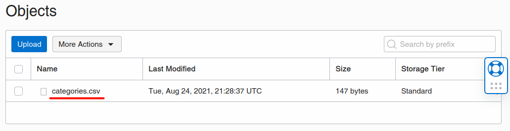
              </picture>
              <figcaption>categories.csv now in the OCI dashboard</figcaption>
            </figure>

<p>We do the exact same process for all the tables we want to import to MySQL Database Service.</p>

<p>You can, of course, also use the GUI to export to CSV and import those CVS files using MySQL Shell directly without using Object Storage:</p>

<figure class="">
              <picture>
                  <source srcset="assets/microsoft-import-csv.webp 1x" />
                  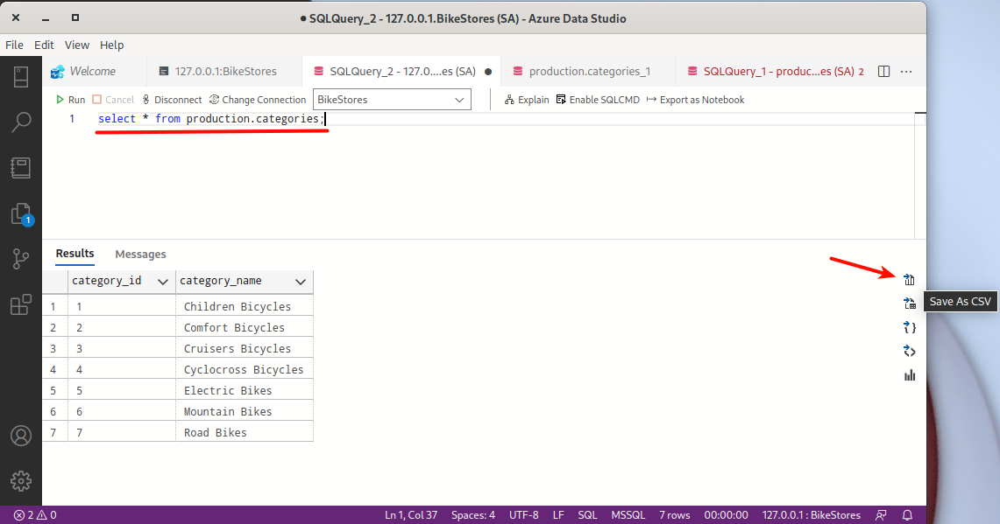
              </picture>
              <figcaption>VS Code with SQL command to import CSV tables</figcaption>
            </figure>

<h2 id="importing-data">Importing Data</h2>

<p>As usual, we will use MySQL Shell to import in MDS the data that has been generated from MS SQL Server.</p>

<p>We start by creating the database and the tables if this is not yet done:</p>

<figure class="">
              <picture>
                  <source srcset="assets/microsoft-create-db-tables.webp 1x" />
                  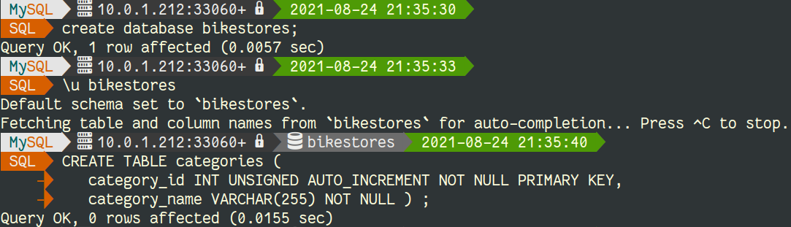
              </picture>
              <figcaption>Command line to create database tables</figcaption>
            </figure>

<p>Don’t forget that if you need an OCI config file on the compute instance, you can create it from the OCI Dashboard for your user (Identity -&gt; User -&gt; User Details):</p>

<figure class="">
              <picture>
                  <source srcset="assets/microsoft-keys-resources.webp 1x" />
                  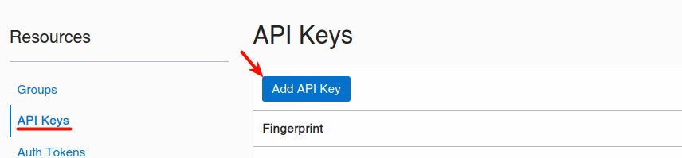
              </picture>
              <figcaption>OCI dashboard with callout highlighting the 'Add API Keys' button</figcaption>
            </figure>

<p>You’ll need to download the keys if you generate them, and then copy the content of the config in <code class="language-plaintext highlighter-rouge">~/.oci/config</code> and set the private key’s location and filename:</p>

<figure class="">
              <picture>
                  <source srcset="assets/microsoft-config-file.webp 1x" />
                  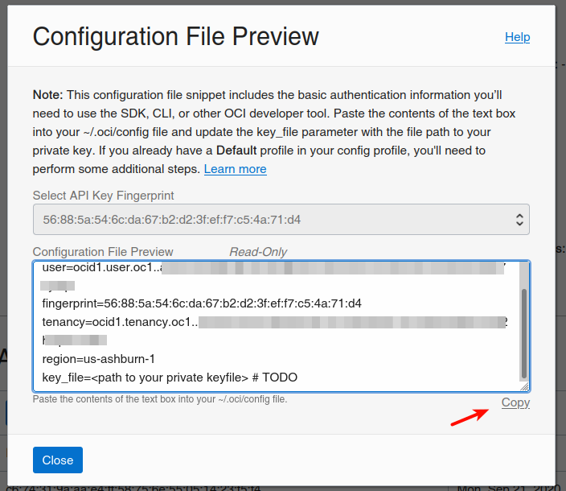
              </picture>
              <figcaption>OCI configuration file preview</figcaption>
            </figure>

<p>After that, you’re ready to import each table using MySQL Shell:</p>

<figure class="">
              <picture>
                  <source srcset="assets/microsoft-sql-import-statements.webp 1x" />
                  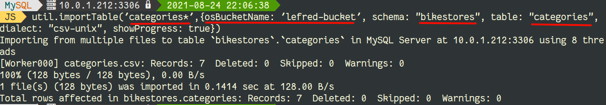
              </picture>
              <figcaption>Import MySQL Shell table statements</figcaption>
            </figure>

<p>We can see that the data is now present in MySQL:</p>

<figure class="">
              <picture>
                  <source srcset="assets/microsoft-sqltable-in-terminal.webp 1x" />
                  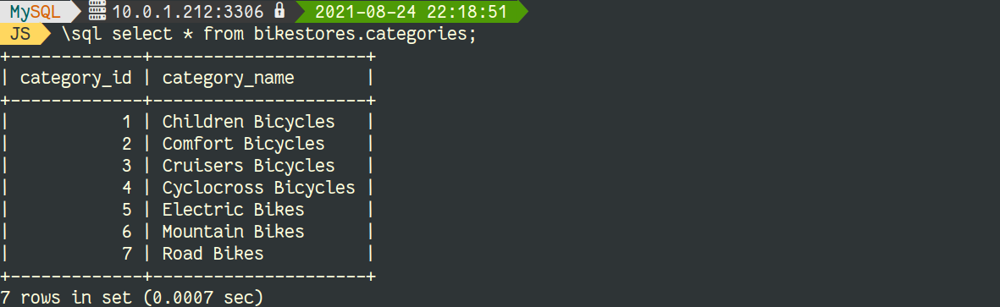
              </picture>
              <figcaption>Shell with database table displayed</figcaption>
            </figure>

<p>Repeat the same operation for each table you want to load into MySQL Database Service.</p>

<p>In case you haven’t used <code class="language-plaintext highlighter-rouge">sqlcmd</code> and Object Storage and prefer the use of the GUI to generate the CSV files, you can import them like this:</p>

<figure class="">
              <picture>
                  <source srcset="assets/microsoft-obj-storage-table.webp 1x" />
                  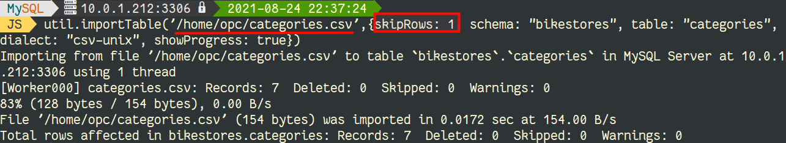
              </picture>
              <figcaption>Terminal with alternative file import statement from the above visual</figcaption>
            </figure>

<h2 id="conclusion">Conclusion</h2>

<p>Once again, the best solution to load data to MySQL Database Service is MySQL Shell.</p>

<p>Enjoy MySQL and MySQL Database Service!</p>


          <div class="sidebar sticky">
    <!-- <p><strong>Tags:</strong> <span class="tags">

            
            <a class="animated-link tag" href="/topics/mysql">mySQL</a>
            <a class="animated-link tag" href="/topics/analytics">analytics</a>
            <a class="animated-link tag" href="/topics/back-end">back-end</a>
            </span>
    </p> -->
  


<div itemscope itemtype="https://schema.org/Person">

  

  <div class="author__content">
    
      <a href="https:/lefred.be/"><h3 class="author__name" itemprop="name">Frédéric Descamps</h3></a>
    
    
      <div class="author__bio" itemprop="description">
        <p>@lefred has been consulting OpenSource and MySQL for 20+ years. After graduating in Management Information Technology, Frédéric started his career as a developer for an ERP under HPUX.</p>

      </div>
    
  </div>

  <div class="author__urls-wrapper">
    <ul class="author__urls social-icons">
      

      

      

      

      

      
        <li>
          <a href="https://twitter.com/lefred" itemprop="sameAs" rel="nofollow noopener noreferrer">
            <i class="fab fa-fw fa-twitter-square" aria-hidden="true"></i><span class="label">Twitter</span>
          </a>
        </li>
      

      

      
        <li>
          <a href="https://www.linkedin.com/in/freddescamps" itemprop="sameAs" rel="nofollow noopener noreferrer">
            <i class="fab fa-fw fa-linkedin" aria-hidden="true"></i><span class="label">LinkedIn</span>
          </a>
        </li>
      

      

      

      

      

      
        <li>
          <a href="https://github.com/lefred" itemprop="sameAs" rel="nofollow noopener noreferrer">
            <i class="fab fa-fw fa-github" aria-hidden="true"></i><span class="label">GitHub</span>
          </a>
        </li>
      

      

      

      

      

      

      

      

      

      

      

      

      

      

      
    </ul>
  </div>
</div>

  
  
  

  </div>


      </section>

      <footer class="page__meta">
        
        


        

  <p class="page__date"><strong><i class="fas fa-fw fa-calendar-alt" aria-hidden="true"></i> Updated:</strong> <time datetime="2021-11-18T12:11:00+00:00">November 18, 2021</time></p>


      </footer>
    </div>

  </article>
</div>

</div>

